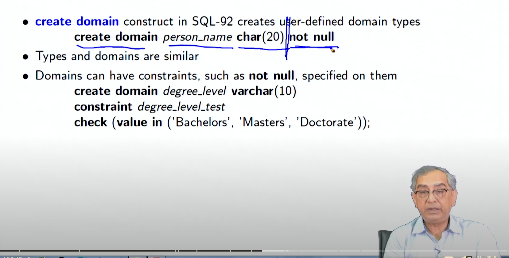

Lecture 3.4- Intermediate SQL3
Transactions
Definition and Properties
- A transaction is a unit of work in a database that must be either fully completed or fully rolled back.
- Transactions ensure atomicity, meaning they are indivisible and irreducible. If a transaction is partially completed and an error occurs, it must be rolled back entirely as if it never happened.
- Transactions must also maintain isolation from other transactions to prevent concurrency issues.
Implementation in SQL
- Transactions begin implicitly and are ended by either a
commitorrollbackcommand. - In most databases, each SQL statement commits automatically by default. However, auto-commit can be turned off for a session using APIs or specific SQL commands.
- SQL:1999 introduced the
begin atomic ... endsyntax to explicitly define transactions, although this is not widely supported.

Integrity Constraints
Purpose and Types
- Integrity constraints are rules applied to database columns to ensure data accuracy and consistency.
- Common types of constraints include:
NOT NULL: Ensures that a column cannot have a NULL value.PRIMARY KEY: A unique identifier for a row, which cannot be NULL.UNIQUE: Ensures all values in a column or a set of columns are unique.CHECK: Ensures that the value in a column meets a specific condition.
Examples and Usage
- Example of a
NOT NULLconstraint:name VARCHAR(20) NOT NULL. - Example of a
UNIQUEconstraint:UNIQUE (A1, A2, ..., Am)whereA1, A2, ..., Amform a candidate key. - Example of a
CHECKconstraint to restrict semester values:
Referential Integrity
Definition and Enforcement
- Referential integrity ensures that a foreign key value in one table must match a primary key value in another table, maintaining consistency between related tables.
- Example: If "Biology" is a department name in the
instructortable, it must exist in thedepartmenttable.
Cascading Actions
-
Cascading actions define the behavior of the database when a user attempts to delete or update a key referenced by foreign keys.
-
Example of cascading actions:
CREATE TABLE course (
course_id CHAR(5) PRIMARY KEY,
title VARCHAR(20),
dept_name VARCHAR(20),
FOREIGN KEY (dept_name) REFERENCES department
ON DELETE CASCADE
ON UPDATE CASCADE
);
- Alternative actions include
NO ACTION,SET NULL, andSET DEFAULT.
SQL Data Types and Schemas
Built-in Data Types
- SQL provides several built-in data types:
DATE: Stores dates.TIME: Stores time of day.TIMESTAMP: Combines date and time.INTERVAL: Represents a period of time.- Examples:
DATE '2005-07-27'TIME '09:00:30'TIMESTAMP '2005-07-27 09:00:30.75'INTERVAL '1' DAY
Index Creation

Alias or User defined Data Type
Domains

BLOB and Clob
Authorization

Privileges and Roles
-
SQL includes mechanisms to control user access to data and operations.
-
Privileges can be granted to users to allow specific actions, such as
SELECT,INSERT,UPDATE, andDELETE. -
Example of granting select privilege on a view:
CREATE VIEW geo_instructor AS
SELECT *
FROM instructor
WHERE dept_name = 'Geology';
GRANT SELECT ON geo_instructor TO geo_staff;
- References privilege is necessary to create foreign keys:
Transfer and Revocation of Privileges
- Privileges can be transferred from one user to another using the
GRANT ... WITH GRANT OPTION. - Privileges can be revoked using the
REVOKEcommand:

Role
Module Summary
The lecture summarizes the following key points:
- Introduction to transactions, ensuring atomicity and isolation.
- Detailed exploration of integrity constraints to maintain data consistency.
- Referential integrity to enforce relationships between tables.
- Advanced SQL data types for handling various forms of data.
- Authorization mechanisms to manage user permissions and roles within the database.
Overall, this lecture provides an in-depth look at intermediate SQL concepts essential for maintaining robust and secure databases.